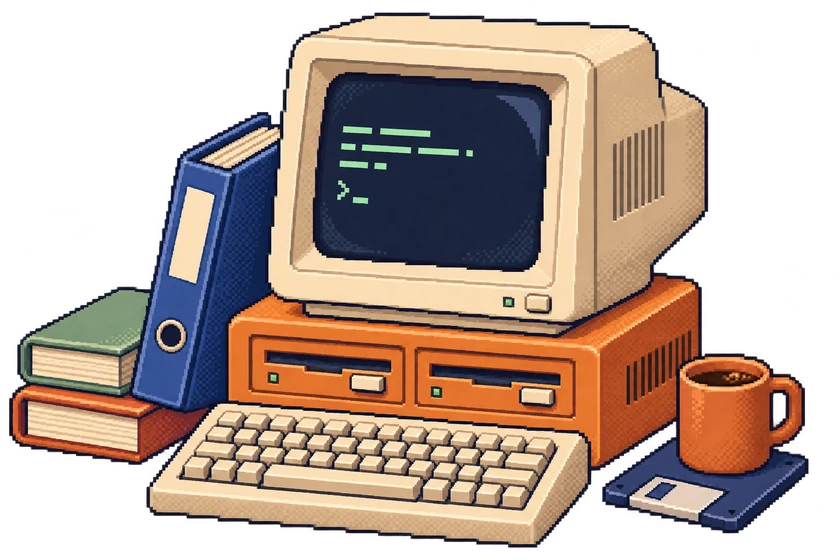

AlgoArchivev2.4.0
从打开代码预览，到原位保存题解、恢复草稿并处理版本冲突。

从首页或比赛列表找到一道题，打开原题、预览和复制代码。
在当前题目中继续编辑，处理版本冲突时核对差异并恢复本地草稿。
把待补题加入清单，记录反例和修正过程。
保存可复用的模板，把同一题归入不同算法分类。
导入多道题，检查预览并处理重复记录。
从找到 g++.exe，到跑通第一组输入和输出。
备份题库、迁移数据，检查本地服务的运行状态。
没有找到相关章节。试试「代码」「导入」或「备份」。